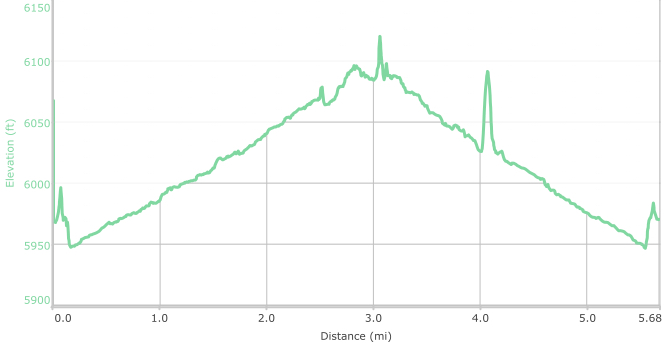
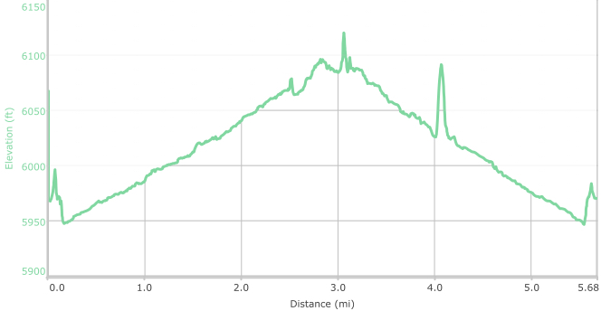

Hike New Mexico
w/ Tom & Ken
Tapia Canyon
| Difficulty | Round-trip | Type | Elev. Chg. | Exposure | Wow Factor | Facilities | Seasons | Photos | By Car |
|---|---|---|---|---|---|---|---|---|---|
| Easy | 6.2 miles | Out-and-back | 150 ft | Full sun | Arch | None | All |
 |
 |


 
- Oct 18, 2016: Looking at the muddy continuation
- Oct 18, 2016: Very wide canyon, with changing views
- Oct 18, 2016: Pay attention to closing dates!
- Oct 18, 2016: No arch can stop Tom
- Oct 18, 2016: The beginning of a long slot canyon
- Oct 18, 2016: Changing geology prompted a photo
- Oct 18, 2016: From the arch top, find Ken
- Oct 18, 2016: Drying mud leaves beautiful patterns
- https://www.flickr.com/photos/139088815@N08/29845670573/in/photostream/
- https://www.flickr.com/photos/139088815@N08/29847268604/in/photostream/
- https://www.flickr.com/photos/139088815@N08/30179502830/in/photostream/
- https://www.flickr.com/photos/139088815@N08/29847283384/in/photostream/
- https://www.flickr.com/photos/139088815@N08/29845699253/in/photostream/
- https://www.flickr.com/photos/139088815@N08/30477916395/in/photostream/
- https://www.flickr.com/photos/139088815@N08/29845715883/in/photostream/
- https://www.flickr.com/photos/139088815@N08/30179547830/in/photostream/

TRAIL TIPS!
NOTE: The canyon is closed periodically for Pueblo Indian use. Check the
closing dates before going! (Visible on the photo of the trailhead).
Getting There: From US550 the road to San Luis is paved, but turns
to gravel shortly thereafter. The first "lookout" is the junction at which a road
turns left to Cabezon Peak: do not take this! The County Road 279 sign is not clearly
visible here, and you must go straight to see it. The second "lookout" is the split
from County Road 279 leading to Tapia Canyon - unmarked. This dirt-track can be difficult
to traverse, and to get to the trailhead and avoid an extra mile of walking, use a
4-wheel drive vehicle with good clearance.
At the trailhead, proceed
straight from the parking lot as if extending the road in. In a hundred yards or so,
there will be a fence, the right end of which abuts the cliff and allows entrance
after unhooking the wire mesh. The trail stays above the canyon for a short time,
then ends where you descend and follow the wash. Be cautious of some eroded trail!
Although remote, Tapia Canyon constitutes a great hike: beautiful scenery, petroglyphs, ruins, an arch and a slot canyon! From the trailhead, some remnants of buildings can be seen both on the left and right-hand side at about 1.8 miles in. The petroglyphs are high on the wall and missed on this hike, but waypoints will be provided in the future to find them. At about 2.7 miles in, a fabulous arch sits parallel to the canyon - an arch that Arches National Monument would be envious of! Under the arch is access to an interesting slot canyon. The hike can be extended well into the canyon depending on conditions - on the day of this hike, the authors were eventually halted by significant muddy floors. If the hike were to be extended past the arch, you would eventually come to a road and some ancient ruins. The hike is very easy and follows a slow rise up the arroyo to the arch and beyond.